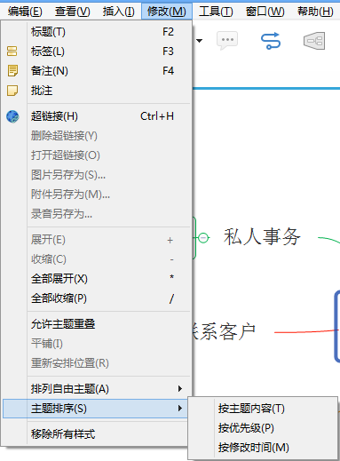

XMind
Collaborative Minds
主题排序
在XMind中，主题排序的功能就是帮助我们更快捷地找到某个或者某些主题，思维图图越大，这个功能越能发挥作用。
选中主题，您即可通过优先级、主题内容或修改时间给选中主题的子主题进行排序。
在菜单栏点击“修改 - 主题排序 - 按优先级/按主题内容/按修改时间”。
注意:
1.XMind排序的对象只有一级，即所选主题的子主题。
2.按照主题内容排序的排序规则默认是英文的字母顺序。所有中文的思维图可能会没有效果。

您可能还对下列内容感兴趣:
主题
排列
帮助中心